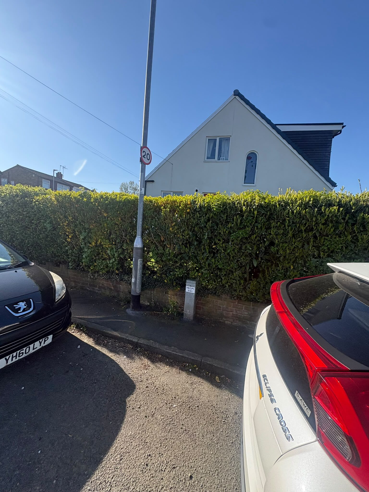
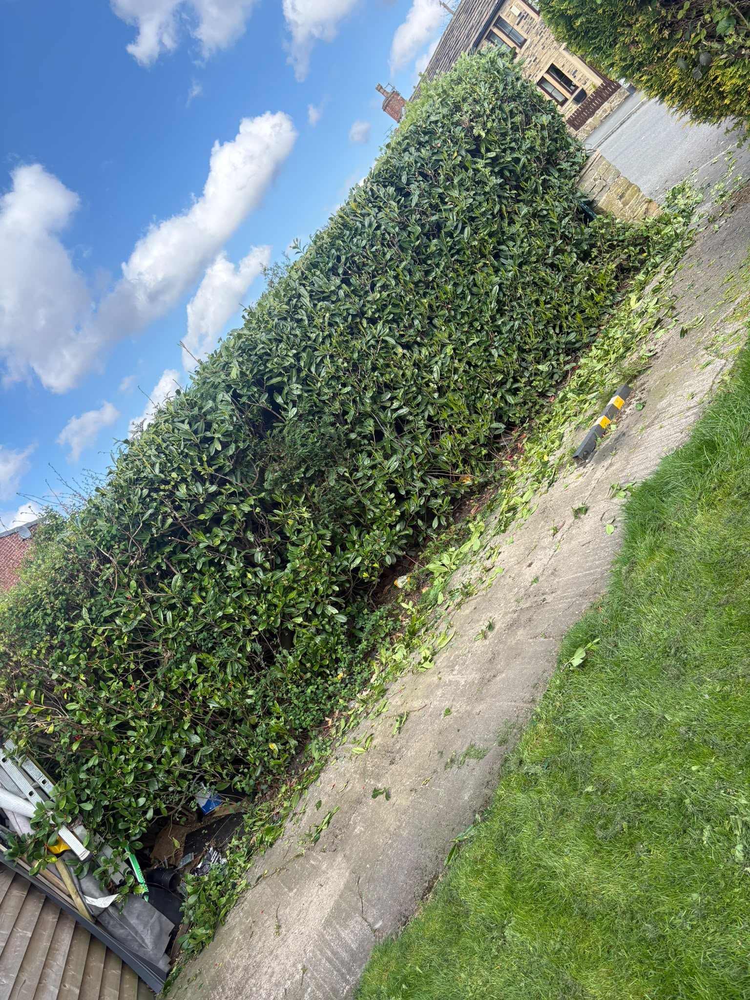
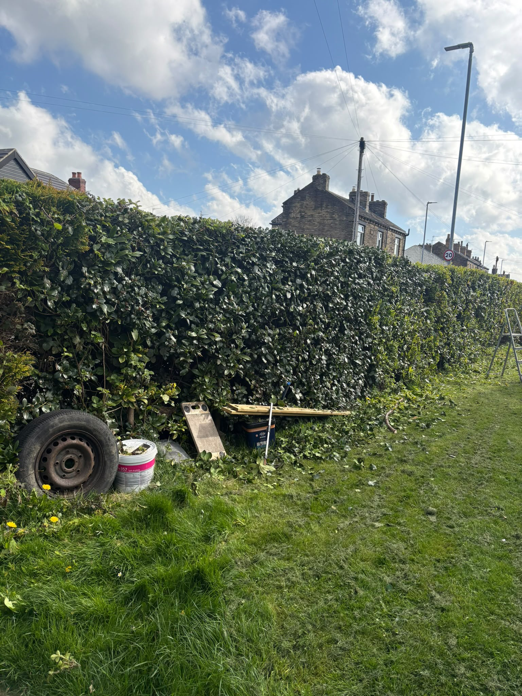
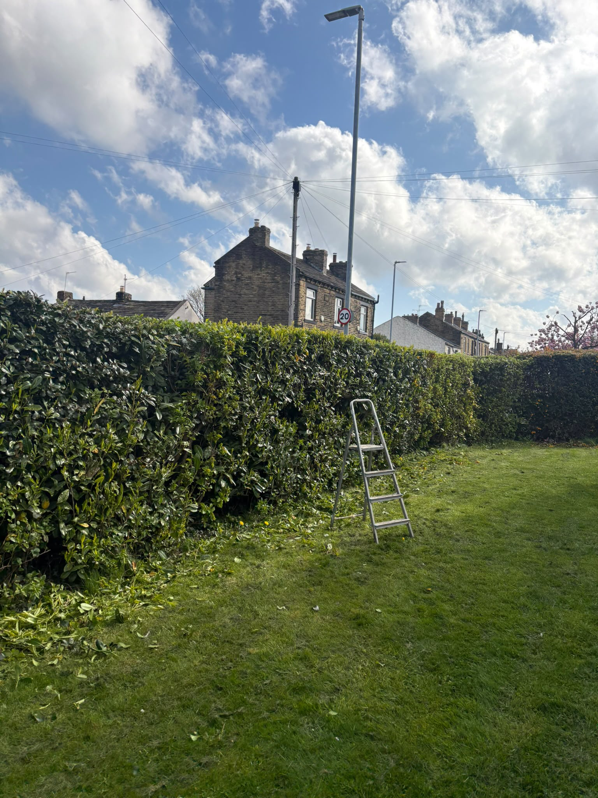
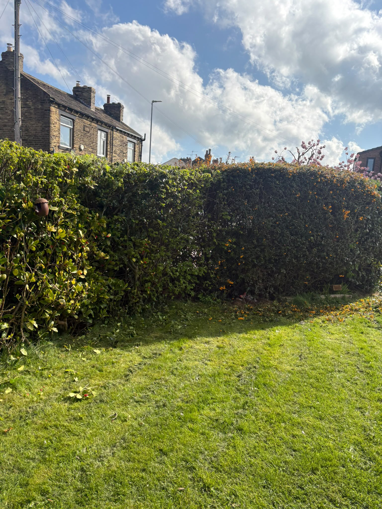

Recent work
Real jobs.Real results.
Actual Miller work photographed on site. No stock photography and no AI-generated project images.
Project 01
Garden clearance.
A neglected garden area cleared back to create a cleaner, more usable space.


Project 02
Hedge reduction.
A long boundary hedge reduced and reshaped to bring it back under control.


More from site
Recent photos.



